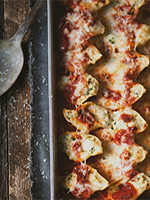

Coquilles géantes farcies au poulet, épinards & fromage
Ingrédients :
- • 32 coquilles géantes
- • 2 tasses de poulet cuit, coupé en dés
- • 1/2 tasses de sauce tomate & basilic
Préparation
- • 1 petit oignon rouge, haché
- • 2 petites gousses d'ail, hachées
- • 1 tasse d'épinards, hachés
- • 1 tasse de fromage ricotta
- • Le zeste d'½ citron
- • 1/4 de tasse de mayonnaise
- • 2 tasses de fromage mozzarella, râpé
- • 1 oeuf, légèrement battu
- • Sel et poivre du moulin, au goût
Pour la farce
Étapes
- • Préchauffer le four à 350 °F.
- • Cuire les pâtes comme indiqué sur l'emballage. Égoutter et huiler. Réserver.
- • Dans un bol, bien mélanger la ricotta, le zeste de citron, la mayonnaise, 1 tasse du fromage mozzarella et l'oeuf. Saler et poivrer.
- • Incorporer le poulet, l'oignon rouge, l'ail et les épinards. Bien mélanger puis réserver.
- • Verser la moitié de la sauce tomate au fond d'une plaque à cuisson. Farcir les coquilles avec le mélange puis les déposer dans la plaque à cuisson. Recouvrir les coquilles du restant de la sauce.
- • Couvrir d'un papier aluminium puis enfourner pendant 30 minutes.
- • Retirer le papier aluminium, couvrir les coquilles du fromage mozzarella restant puis gratiner au four pendant quelques minutes.